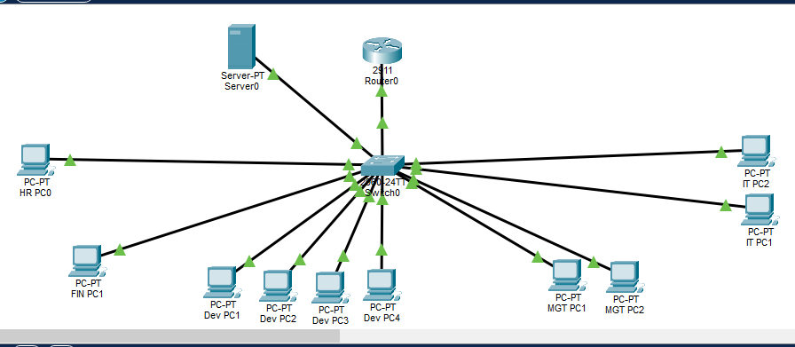
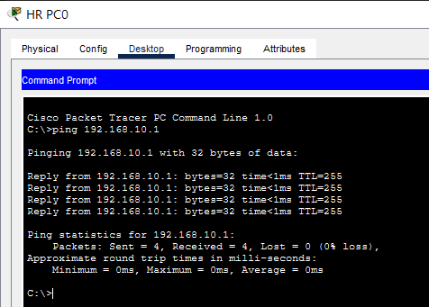
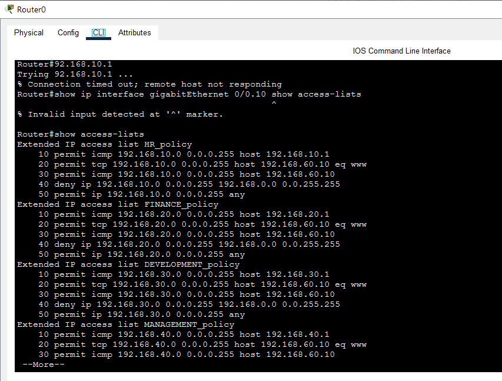
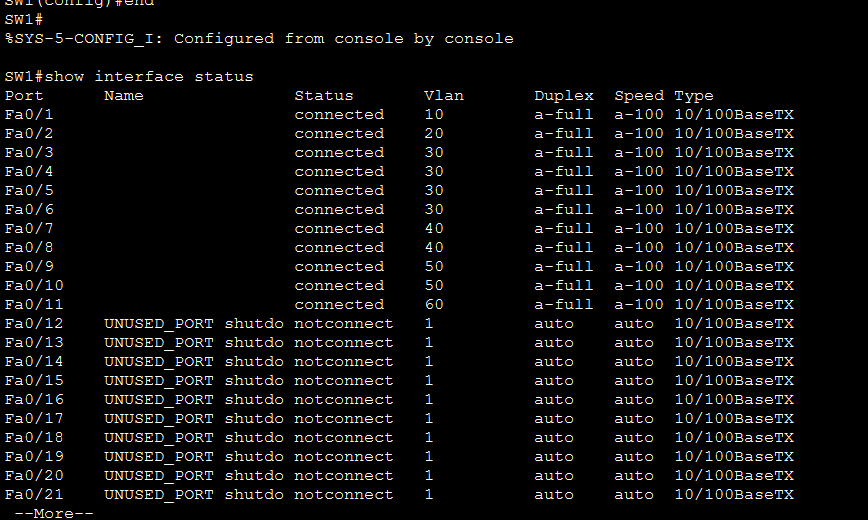

Project submission details
1. Executive Summary
This project presents the design, implementation, and security management of a small organizational network for a fictional software development company named ABC Software House.
The purpose of this project is to develop a secure, organized, and manageable network infrastructure that supports communication between different departments while maintaining appropriate network separation and security.
The network supports five departments: Human Resources, Finance, Development, Management, and IT. Each department is assigned a separate Virtual Local Area Network (VLAN), and a dedicated server is placed in a separate server VLAN.
Cisco Packet Tracer is used to simulate the infrastructure. The implementation includes VLANs, IPv4 addressing, DHCP, router-on-a-stick inter-VLAN routing, a centralized HTTP service, extended Access Control Lists (ACLs), switch port security, connectivity verification, and configuration backups.
2. Introduction
Computer networks are essential for communication, information sharing, and daily business operations. Software companies depend on reliable connectivity for software development, financial operations, employee management, and technical support.
Connecting every computer to one unrestricted network can make administration difficult and increase security risks. This project addresses those challenges by proposing a segmented and centrally managed network for ABC Software House.
3. Company Profile
Company: ABC Software House
Business type: Software development and IT services
Organization size: Small organization
| Department | Computers | Main responsibility |
|---|---|---|
| Human Resources (HR) | 1 | Employee records and recruitment |
| Finance | 1 | Financial records and expenses |
| Development | 4 | Software development and testing |
| Management | 2 | Business supervision and decisions |
| IT | 2 | Network and technical support |
| Total | 10 | Plus one centralized server |
Each department has distinct operational responsibilities and requires reliable connectivity with appropriate network separation.
3.1 Organizational Structure
The company consists of five departments, each having different responsibilities.
- Human Resources: Manages employee records, recruitment information, and staff-related activities.
- Finance: Handles financial records, expenses, and organizational transactions.
- Development: Develops, tests, and maintains software applications.
- Management: Supervises business operations and makes organizational decisions.
- IT: Manages network infrastructure, technical support, and system maintenance.
- Each department requires reliable network connectivity while maintaining appropriate separation from other departments.
4. Problem Statement
ABC Software House requires an organized network that supports departmental communication while reducing unnecessary access and simplifying administration.
- Unnecessary Access between departments.
- Manual IP configuration and possible address conflicts.
- Difficulty managing network devices and services.
- Unauthorized devices connecting to switch ports.
- Potential loss of configurations without backups.
5. Project Objectives
- Design a realistic small-business network.
- Separate departments using VLAN technology.
- Assign a dedicated IP subnet to each VLAN.
- Provide automatic IP configuration through DHCP.
- Enable inter-VLAN routing through a router.
- Deploy a centralized web server.
- Apply network traffic filtering using ACLs.
- Protect switch access ports using port security.
- Verify connectivity and save device configurations.
6. Organizational Network Requirements
| Requirement | Proposed solution |
|---|---|
| Department separation | VLANs |
| Automatic IP assignment | DHCP |
| Communication between VLANs | Router-on-a-Stick |
| Centralized web service | Dedicated server |
| Traffic filtering | Extended ACLs |
| Switch port protection | Port security |
| Configuration protection | Router and switch backups |
7. Proposed Network Architecture
The design uses one Cisco 2911 router, one Cisco 2960-24TT switch, ten departmental computers, and one server. The router connects to the switch using a trunk link. The switch connects the end devices using access ports.
The router uses logical subinterfaces to provide default gateways for the VLANs. This arrangement is known as Router-on-a-Stick.

Complete Cisco Packet Tracer network topologyFigure 1Communication flow: A PC sends traffic to the switch. For traffic destined for another VLAN, the switch forwards it over the trunk to the router. The router processes the packet according to its routing table and applicable ACL, then forwards permitted traffic toward its destination.
8. Hardware and Software Requirements
| Component | Quantity / model | Purpose |
|---|---|---|
| Router | Cisco 2911 × 1 | Inter-VLAN routing |
| Switch | Cisco 2960-24TT × 1 | Device connectivity and VLANs |
| PCs | 10 | Departmental operations |
| Server | 1 | Centralized HTTP service |
| Ethernet cables | As required | Network connections |
Software: Cisco Packet Tracer, Cisco IOS command-line interface, a PC web browser, and a text editor for configuration backups.
9. VLAN Design and Department Segmentation
A Virtual Local Area Network (VLAN) logically separates devices into different broadcast domains, even when they use the same physical switch.
| VLAN ID | VLAN name | Department / use |
|---|---|---|
| 10 | HR | Human Resources |
| 20 | FINANCE | Finance |
| 30 | DEVELOPMENT | Development |
| 40 | MANAGEMENT | Management |
| 50 | IT | Information Technology |
| 60 | SERVERS | Centralized server |
 Switch VLAN table — show vlan briefFigure 2
Switch VLAN table — show vlan briefFigure 2VLANs improve organization, reduce unnecessary broadcast traffic between departments, and provide a basis for applying different network policies. A VLAN is not the same as a single switch port; multiple ports and computers can belong to one VLAN.
10. IP Addressing Scheme
Each VLAN uses a separate private IPv4 subnet with a /24 prefix (subnet mask 255.255.255.0).
| Department | VLAN | Network | Default gateway |
|---|---|---|---|
| HR | 10 | 192.168.10.0/24 | 192.168.10.1 |
| Finance | 20 | 192.168.20.0/24 | 192.168.20.1 |
| Development | 30 | 192.168.30.0/24 | 192.168.30.1 |
| Management | 40 | 192.168.40.0/24 | 192.168.40.1 |
| IT | 50 | 192.168.50.0/24 | 192.168.50.1 |
| Servers | 60 | 192.168.60.0/24 | 192.168.60.1 |
Server static addressing
| IP address | 192.168.60.10 |
|---|---|
| Subnet mask | 255.255.255.0 |
| Default gateway | 192.168.60.1 |
| Configured DNS | 8.8.8.8 |
 Server static IPv4 configurationFigure 3
Server static IPv4 configurationFigure 3The server uses a static address so clients and administrators can reach it at a consistent IP address. Configuring a public DNS address does not, by itself, establish Internet connectivity.
11. Switch Configuration
The Cisco 2960 switch connects departmental PCs and the server. Access ports are assigned to the appropriate VLAN.
| Switch port | Connected device | VLAN |
|---|---|---|
| Fa0/1 | HR-PC1 | 10 |
| Fa0/2 | FIN-PC1 | 20 |
| Fa0/3–Fa0/6 | DEV-PC1–DEV-PC4 | 30 |
| Fa0/7–Fa0/8 | MGT-PC1–MGT-PC2 | 40 |
| Fa0/9–Fa0/10 | IT-PC1–IT-PC2 | 50 |
| Fa0/11 | Server1 | 60 |
| Gi0/1 | Router G0/0 | Trunk |
VLAN creation example
enable configure terminal vlan 10 name HR exit vlan 20 name FINANCE exit vlan 30 name DEVELOPMENT exit vlan 40 name MANAGEMENT exit vlan 50 name IT exit vlan 60 name SERVERS exit
Access port example
interface fastEthernet 0/1 switchport mode access switchport access vlan 10 exit
Trunk configuration
interface gigabitEthernet 0/1 switchport mode trunk switchport trunk allowed vlan 10,20,30,40,50,60 exit
 Switch trunk configuration and allowed VLANsFigure 4
Switch trunk configuration and allowed VLANsFigure 4A trunk carries traffic for multiple VLANs across one physical switch-to-router connection using VLAN tags.
12. Router-on-a-Stick Configuration
Router-on-a-Stick allows one physical router interface to route traffic for multiple VLANs using logical subinterfaces. The physical interface used is GigabitEthernet0/0.
Example subinterface for HR
interface gigabitEthernet 0/0.10 encapsulation dot1Q 10 ip address 192.168.10.1 255.255.255.0
| Subinterface | VLAN | Gateway |
|---|---|---|
| G0/0.10 | 10 | 192.168.10.1 |
| G0/0.20 | 20 | 192.168.20.1 |
| G0/0.30 | 30 | 192.168.30.1 |
| G0/0.40 | 40 | 192.168.40.1 |
| G0/0.50 | 50 | 192.168.50.1 |
| G0/0.60 | 60 | 192.168.60.1 |
The physical interface was enabled with no shutdown. Each subinterface uses encapsulation dot1Q to identify its VLAN.
 Router subinterfaces — show ip interface briefFigure 5
Router subinterfaces — show ip interface briefFigure 5The configured subinterfaces were observed in an operational up/up state.
13. DHCP Configuration
Dynamic Host Configuration Protocol (DHCP) automatically provides IP configuration to client computers. The router provides a separate DHCP pool for each departmental subnet.
Addresses from .1 through .20 are excluded from automatic allocation, reserving them for gateways, servers, and infrastructure. DHCP clients begin at .21.
HR DHCP example
ip dhcp excluded-address 192.168.10.1 192.168.10.20 ip dhcp pool HR_POOL network 192.168.10.0 255.255.255.0 default-router 192.168.10.1 dns-server 8.8.8.8
Equivalent pools were configured for Finance, Development, Management, IT, and the server subnet as planned. The server itself uses its static address.
| Department | Observed DHCP address(es) |
|---|---|
| HR | 192.168.10.21 |
| Finance | 192.168.20.21 |
| Development | 192.168.30.21–192.168.30.24 |
| Management | 192.168.40.21–192.168.40.22 |
| IT | 192.168.50.21–192.168.50.22 |
 DHCP bindings — show ip dhcp bindingFigure 6
DHCP bindings — show ip dhcp bindingFigure 614. Centralized Server Configuration
A dedicated server is connected to switch port Fa0/11 in VLAN 60. It uses the static IP address 192.168.60.10 and provides an HTTP service for departmental clients.
HTTP service
The HTTP service was enabled through the server's Services panel in Cisco Packet Tracer.
 Server HTTP service enabledFigure 7
Server HTTP service enabledFigure 7Website accessibility
From a departmental PC, the server was accessed in the web browser using:
http://192.168.60.10
 Server website successfully opened from a departmental PCFigure 8
Server website successfully opened from a departmental PCFigure 8This confirms access to the simulated HTTP service from the tested client. It does not imply that the server is publicly accessible over the Internet.
15. Network Connectivity Testing
Connectivity tests were performed to check communication between a client, its default gateway, and the centralized server.
HR gateway test
ping 192.168.10.1
Observed result: 4 packets sent, 4 received, 0% packet loss.

HR-PC1 successful ping to its default gatewayFigure 9HR-to-server test
ping 192.168.60.10
The initial test showed a first-request timeout followed by successful replies. A first timeout can occur while ARP resolves the destination MAC address. The subsequent replies and successful browser test provided evidence of server reachability.
 HR-PC1 ping to centralized serverFigure 10
HR-PC1 ping to centralized serverFigure 1016. Network Security Implementation
Security mechanisms were introduced to reduce unnecessary network access and protect switch connections. The implemented controls include VLAN segmentation, extended ACLs, and switch port security. Configuration backups support recovery after accidental changes or device replacement.
17. Access Control Lists (ACLs)
An Access Control List is a sequence of rules that permits or denies traffic based on conditions such as source and destination addresses, protocol, and port number. Extended ACLs were created for the five departmental VLANs.
| ACL name | Applied inbound interface |
|---|---|
| HR_POLICY | G0/0.10 |
| FINANCE_POLICY | G0/0.20 |
| DEVELOPMENT_POLICY | G0/0.30 |
| MANAGEMENT_POLICY | G0/0.40 |
| IT_POLICY | G0/0.50 |
The configured rule pattern permits ICMP to the department's own gateway, TCP access to the server's HTTP port 80, and ICMP to the server; denies traffic from that department to the specified private address block 192.168.0.0/16; and permits remaining traffic.
HR ACL example
ip access-list extended HR_POLICY permit icmp 192.168.10.0 0.0.0.255 host 192.168.10.1 permit tcp 192.168.10.0 0.0.0.255 host 192.168.60.10 eq 80 permit icmp 192.168.10.0 0.0.0.255 host 192.168.60.10 deny ip 192.168.10.0 0.0.0.255 192.168.0.0 0.0.255.255 permit ip 192.168.10.0 0.0.0.255 any

Configured extended ACL rulesFigure 1118. Switch Port Security
Port security helps restrict which MAC addresses can use a switch access port. It was enabled on FastEthernet0/1 through FastEthernet0/11.
Configuration
interface range fastEthernet 0/1 - 11 switchport mode access switchport port-security switchport port-security maximum 1 switchport port-security mac-address sticky switchport port-security violation restrict
- Maximum 1: permits one secure MAC address per protected port.
- Sticky MAC: dynamically learns a connected device's MAC address and adds it to the secure address table.
- Restrict: drops traffic from an unauthorized MAC address and increments the violation counter without shutting down the port.
Port security was checked using show port-security. The HR computer's MAC address was confirmed as learned through sticky MAC learning. Do not assume that every port's MAC address was learned unless the corresponding evidence is available.

Port security status for protected switch portsFigure 1319. Configuration Backup and Recovery
Router and switch configurations were saved to their startup configurations. External text copies can also be retained for reference and recovery.
Save command
copy running-config startup-config
Display current configuration
show running-config
Suggested external backup filenames:
R1_Router_Backup.txtSW1_Switch_Backup.txt
Recovery procedure
- Replace or reset the affected device as appropriate.
- Access its command-line interface.
- Restore the saved configuration.
- Verify interfaces, VLANs, routing, DHCP, and security policies.
- Perform connectivity tests and confirm service availability.
20. Network Maintenance Plan
| Activity | Suggested frequency | Purpose |
|---|---|---|
| Check device and interface status | Weekly | Identify connectivity problems |
| Review security settings | Monthly | Maintain protection |
| Review DHCP assignments | Monthly | Monitor IP allocation |
| Review ACL policies | Monthly / after changes | Check traffic rules |
| Save configuration backups | After every change | Protect device configurations |
| Check server services | Weekly | Maintain service availability |
| Inspect cables and connections | Monthly | Identify physical faults |
| Update documentation | After every change | Keep records accurate |
21. Risk Assessment and Management
| Risk | Possible impact | Recommended mitigation |
|---|---|---|
| Unauthorized device connection | Unapproved network access | Switch port security |
| Incorrect VLAN assignment | Connectivity or segmentation issues | Verify VLAN and port configuration |
| IP address conflict | Unreliable connectivity | Centralized DHCP management |
| Unwanted network traffic | Exposure of internal resources | Review and test ACL policies |
| Configuration loss | Network downtime | Regular backups |
| Server failure | Service interruption | Recovery planning and server backups |
| Cable damage | Loss of connectivity | Physical inspection and replacement |
22. Limitations and Future Improvements
Current limitations
- The network is simulated in Packet Tracer rather than deployed in a physical office.
- One router and one switch create potential single points of failure.
- The server provides a basic simulated HTTP service, not a complete production hosting environment.
- The configured DNS address does not prove external Internet connectivity.
- ACLs provide basic network filtering, not user-based or file-level permissions.
- Advanced monitoring, centralized logging, and high availability are outside the current scope.
Future improvements
- Add redundant switching and routing equipment.
- Deploy a dedicated firewall.
- Use HTTPS for secure web services.
- Implement centralized authentication and role-based access.
- Introduce network monitoring and centralized logging.
- Maintain a separate backup server.
- Configure a controlled Internet gateway.
- Provide separate wireless guest access.
- Consider redundant power and network links.
23. Conclusion
This project demonstrates the design and simulation of a structured network infrastructure for ABC Software House using Cisco Packet Tracer. The network includes five departmental VLANs and a separate server VLAN, DHCP-based client addressing, router-on-a-stick inter-VLAN routing, and a centralized HTTP service.
Extended ACLs and switch port security were configured to introduce network-level access controls. Connectivity tests were performed, and router and switch configurations were backed up.
Overall, the project demonstrates practical concepts in network design, configuration, administration, and security management. The design provides a foundation that can be expanded with stronger access controls, redundancy, monitoring, and production-grade services.